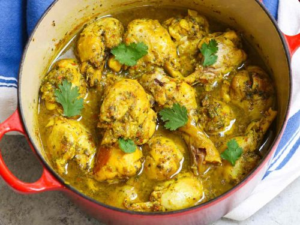

The All-Fathers Favorite Kind of Curry
Long ago the All-Father Traveled to the carribean for loot and plunder.
He left the islands with this, and a few of their greatest treasures.

Shopping List
- ¼ cup curry powder, divided
- 2 tablespoons garlic powder
- 1 tablespoon seasoned salt
- 1 tablespoon onion powder
- 2 teaspoons salt
- 1 sprig fresh thyme, leaves stripped
- 1 pinch ground allspice, or more to taste
- salt and ground black pepper to taste
- 2 ¼ pounds whole chicken, cut into pieces
- 3 tablespoons vegetable oil
- 3 cups water
- 1 potato, diced
- ½ cup chopped carrots
- 2 scallions (green onions), chopped
- 1 (1 inch) piece fresh ginger root, minced
- 1 Scotch bonnet chile pepper, chopped, or to taste
Instructions
-
Whisk 2 tablespoons curry powder, garlic powder, seasoned salt, onion powder, salt, thyme leaves, allspice, salt, and pepper together in a bowl. Add chicken and coat with curry mixture until curry mixture is wet and sticks to chicken.
-
Heat oil and 2 tablespoons curry powder in a large cast-iron skillet over high heat until oil is hot and curry powder changes color, 2 to 3 minutes. Add chicken to the hot oil mixture and reduce heat to medium. Add water, potato, carrots, scallions, ginger, and chile pepper to skillet.
-
Cover skillet and simmer until chicken is no longer pink in the center and gravy is thickened, allowing chicken to cook undisturbed for last 15 minutes of cooking, 30 to 40 minutes. An instant-read thermometer inserted into the thickest part of the thigh, near the bone, should read 165 degrees F (74 degrees C). Remove chicken to a serving dish; continue simmering gravy, uncovered, to thicken (if needed). Serve chicken with gravy.
If that isnt good enough, her's Chef johns recipe for you.
The All Father is quite fond of his recipes